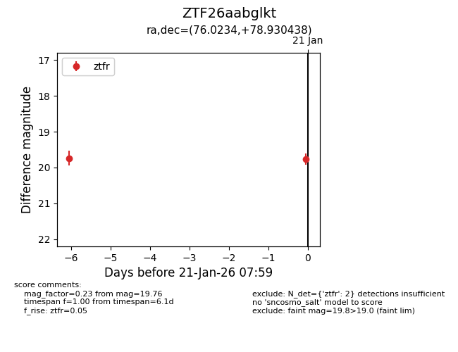
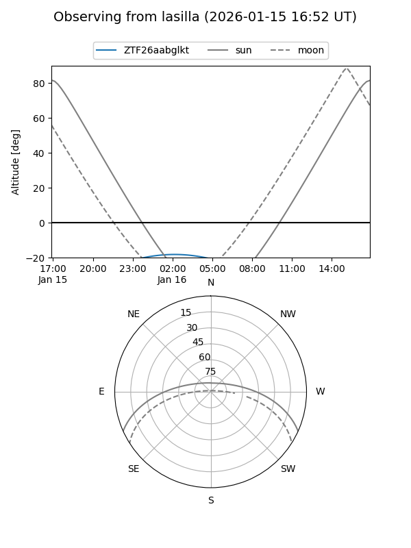
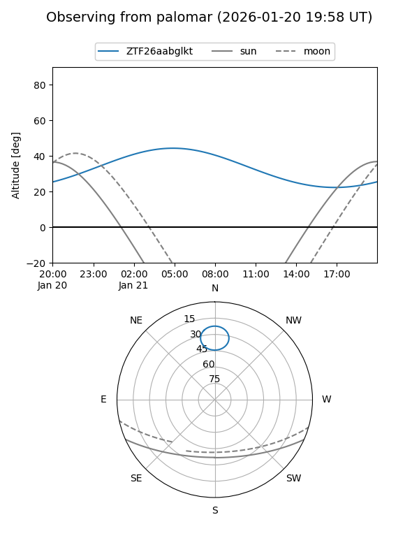

ZTF26aabglkt
Target ZTF26aabglkt at 2026-01-15 09:35
Aliases and brokers:
FINK: link
Lasair: link
ALeRCE: link
alt names
ZTF26aabglkt (ztf,fink_ztf)
Coordinates:
equatorial (ra, dec) = 76.0234,+78.93044
equatorial (HMS+DMS) = 05:04:05.61,+78:55:49.58
galactic (l, b) = (133.5603,+21.73775)
Flags:
Photometry:
last ztfr=19.74
1 ztfr detections
Lightcurve

Visibility


Additional plots